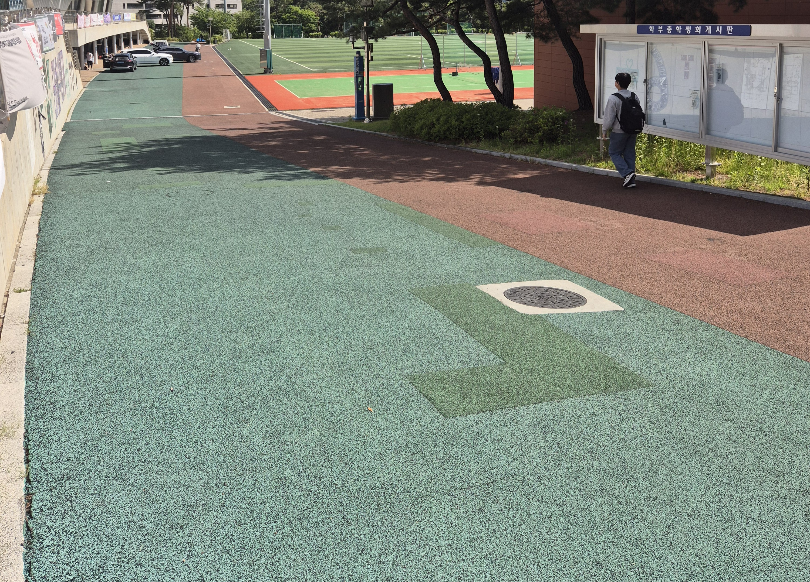
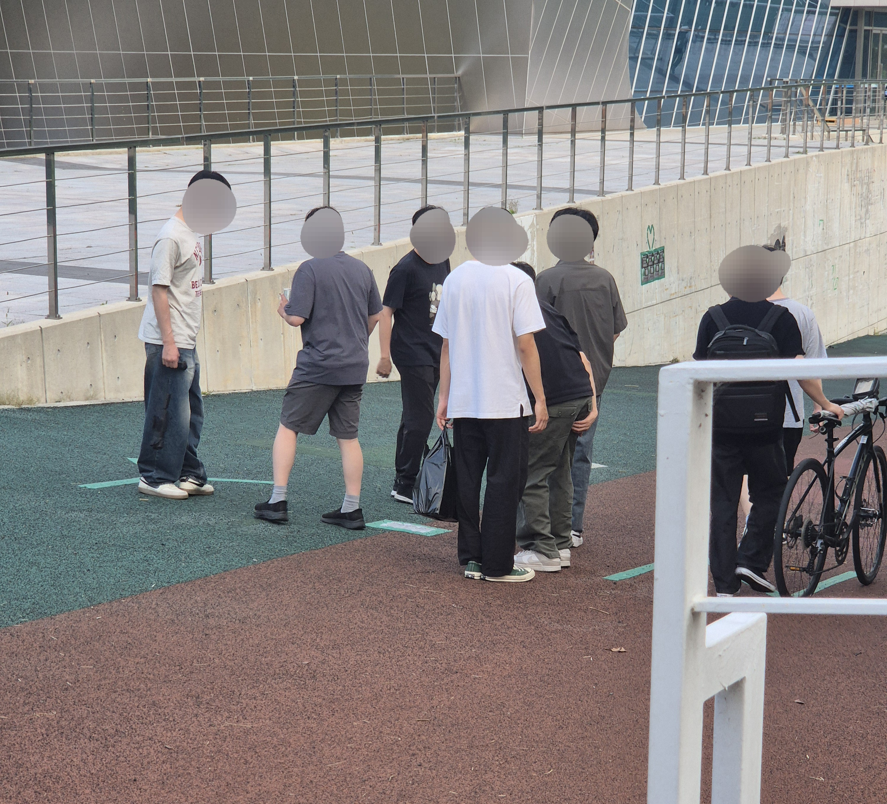
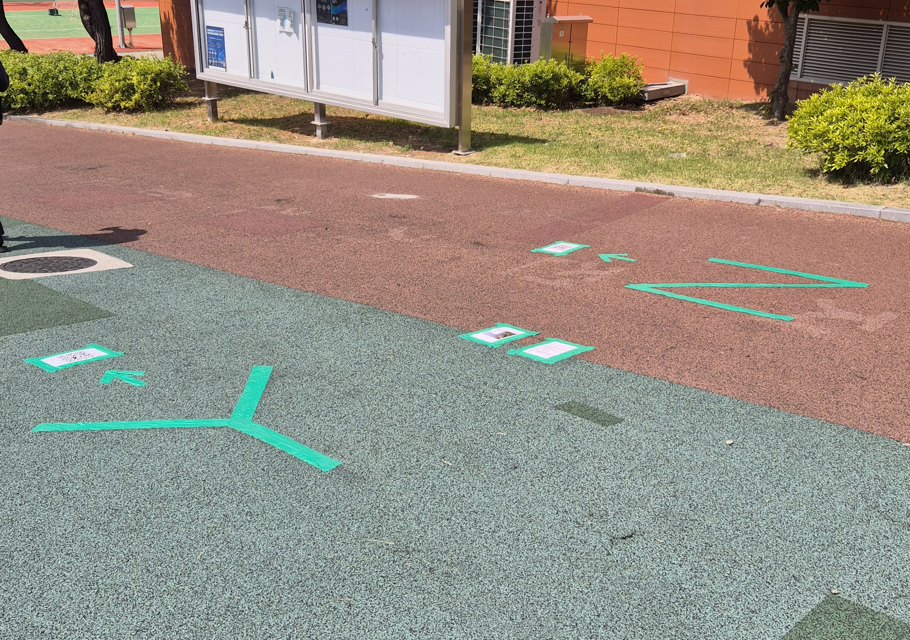

On this path, people's footsteps always follow the most comfortable straight line, regardless of the thoughts that cross their brains. We displayed forks in the path on the floor and let users confirm their selections using real-time outcomes in order to break this well-known pattern. As a result, people voluntarily altered their usual routes to carry out their decisions, and their real footfall joined together to produce a new collection of motions in this area, much like the gathered statistics you are currently viewing.
사람들은 이 길에서 마음속으로 어떤 생각을 하든 발걸음은 늘 가장 편한 직선을 향합니다. 이 익숙한 패턴을 깨기 위해 바닥에 선택의 갈림길을 제시하고, 자신의 선택을 실시간 결과물을 통해 확인받도록 했습니다. 결과적으로 사람들은 선택을 이행하기 위해 기꺼이 관성적인 동선을 바꿨고, 지금 당신이 보고 있는 누적된 숫자처럼 사람들의 실제 발걸음이 모여 이 공간의 새로운 움직임의 집합을 완성해 냈습니다.